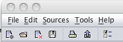

There are five Menu Options that are listed at the very top of the application above the toolbar.
These are:
These options allow the user to do things such as save, print, customize PC generation, help troubleshoot the program, and many other features. To use them simply click on the appropriate option and a drop down menu will appear. If there are more choices for that option then an arrow such as ">" will appear. Following the arrow with the mouse opens further drop down menus to select more options.
Please see the appropriate sections on how to use the options provided.